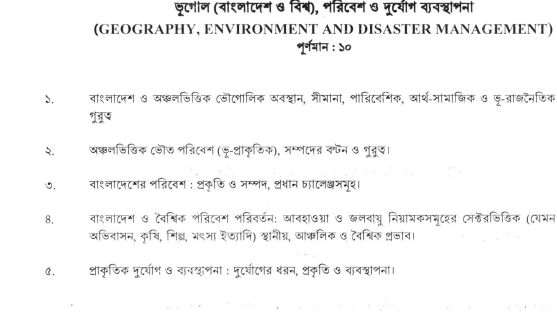

The atlas could not load. Tap Reload app to try again.
THE DISTRICT ATLAS
64 districtsBangladesh districts
Loading the Bangladesh atlas…
Swipe with one finger to scroll the page. Use two fingers to pan or pinch the map. Tap a district to explore. Trackpad scrolling pans; + / − zooms. Boundaries: BBS / OCHA, 2020, via geoBoundaries.
TRAVEL THROUGH TIME
Ancient BengalColonial era19712026
Each step is an event, not an equal time interval. Modern district boundaries remain on the map.
¹ DPDT registry snapshot · 16 June 20260 / 64 districts explored
All Bangladesh facts
No matching facts. Try a broader search, another topic, or turn off Saved.
The images define the topic coverage; they do not provide an exam year or an issuing authority. These marks are transcribed from the images.
View your original syllabus images
